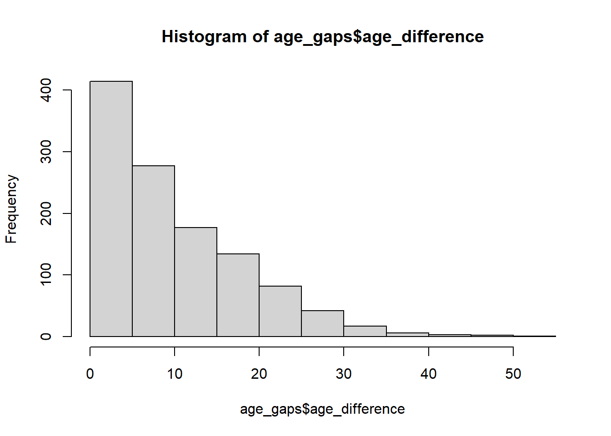
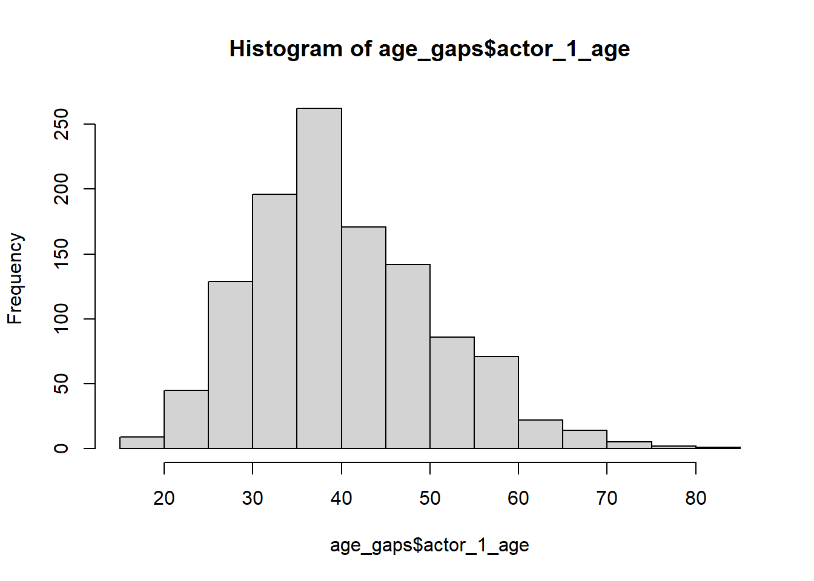
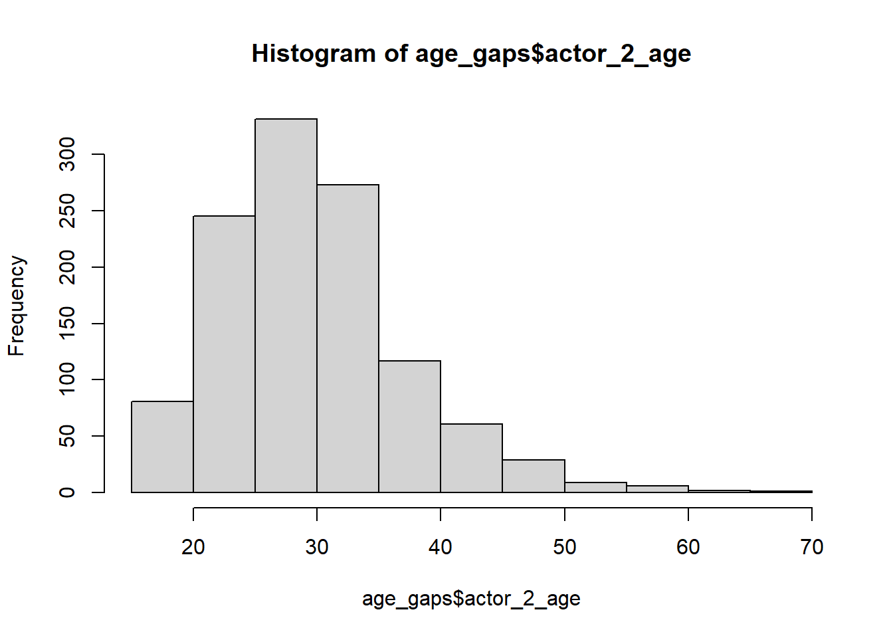
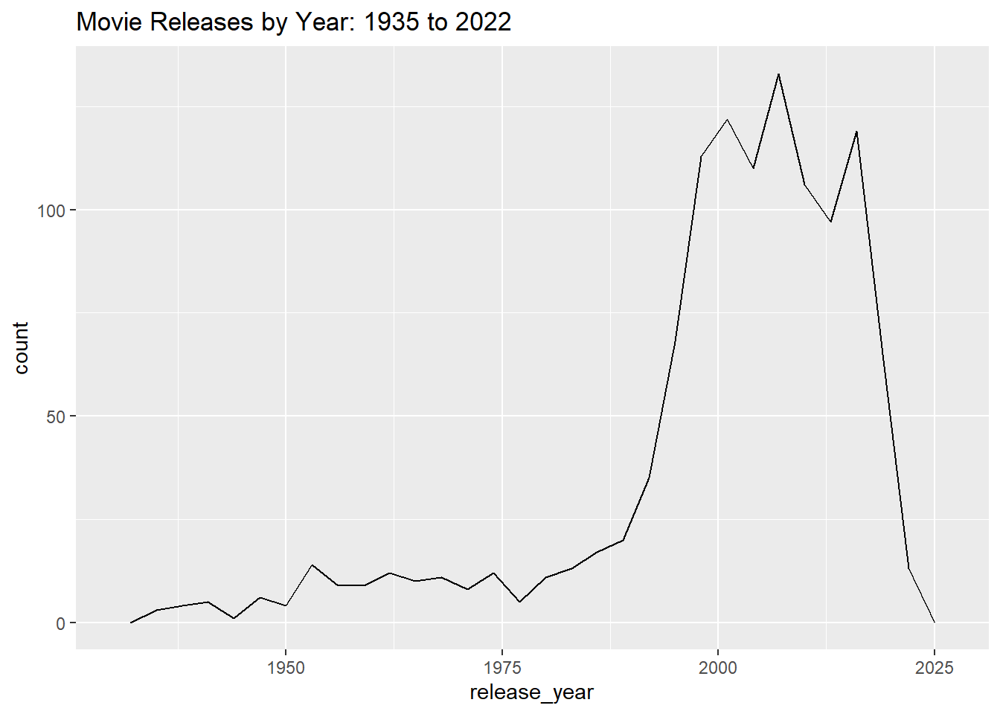
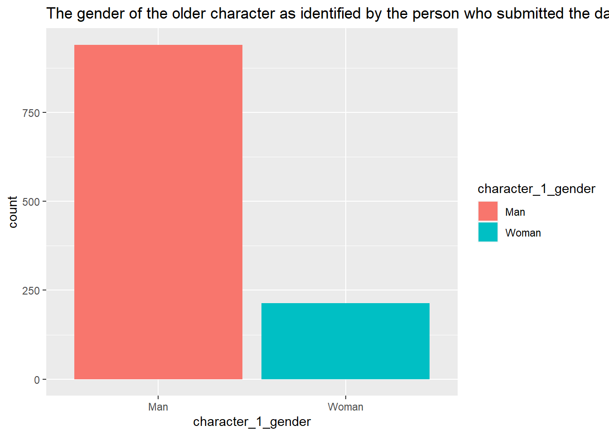
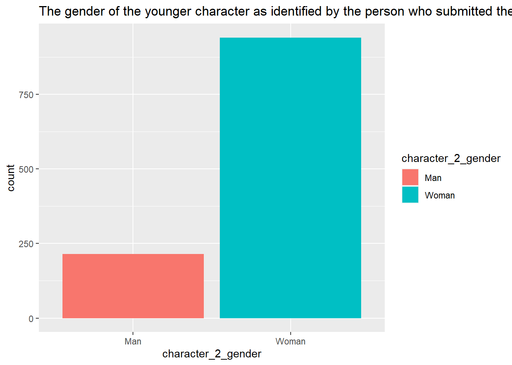

Warning: package 'janitor' was built under R version 4.2.2
Attaching package: 'janitor'
The following objects are masked from 'package:stats':
chisq.test, fisher.test
library(reshape)
Warning: package 'reshape' was built under R version 4.2.2
Attaching package: 'reshape'
The following objects are masked from 'package:tidyr':
expand, smiths
The following object is masked from 'package:dplyr':
rename
The following objects are masked from 'package:plyr':
rename, round_any
Import Data
#load the tidytuesday data
tuesdata<-tidytuesdayR::tt_load('2023-02-14')
--- Compiling #TidyTuesday Information for 2023-02-14 ----
--- There is 1 file available ---
--- Starting Download ---
Downloading file 1 of 1: `age_gaps.csv`
--- Download complete ---
#Read the specific age gaps dataset
age_gaps<-tuesdata$age_gaps
Getting Familiar with the data
#Ensure your data loaded correctly and understanding the data structure
movie_name release_year director age_difference
Length:1155 Min. :1935 Length:1155 Min. : 0.00
Class :character 1st Qu.:1997 Class :character 1st Qu.: 4.00
Mode :character Median :2004 Mode :character Median : 8.00
Mean :2001 Mean :10.42
3rd Qu.:2012 3rd Qu.:15.00
Max. :2022 Max. :52.00
couple_number actor_1_name actor_2_name character_1_gender
Min. :1.000 Length:1155 Length:1155 Length:1155
1st Qu.:1.000 Class :character Class :character Class :character
Median :1.000 Mode :character Mode :character Mode :character
Mean :1.398
3rd Qu.:2.000
Max. :7.000
character_2_gender actor_1_birthdate actor_2_birthdate actor_1_age
Length:1155 Min. :1889-04-16 Min. :1906-10-06 Min. :18.00
Class :character 1st Qu.:1953-05-16 1st Qu.:1965-03-25 1st Qu.:33.00
Mode :character Median :1964-10-03 Median :1974-07-30 Median :39.00
Mean :1960-09-07 Mean :1971-01-29 Mean :40.64
3rd Qu.:1973-08-07 3rd Qu.:1982-04-07 3rd Qu.:47.00
Max. :1996-06-01 Max. :1996-11-11 Max. :81.00
actor_2_age
Min. :17.00
1st Qu.:25.00
Median :29.00
Mean :30.21
3rd Qu.:34.00
Max. :68.00
# A tibble: 1,155 × 13
movie_name relea…¹ direc…² age_d…³ coupl…⁴ actor…⁵ actor…⁶ chara…⁷ chara…⁸
<chr> <dbl> <chr> <dbl> <dbl> <chr> <chr> <chr> <chr>
1 Harold and M… 1971 Hal As… 52 1 Ruth G… Bud Co… woman man
2 Venus 2006 Roger … 50 1 Peter … Jodie … man woman
3 The Quiet Am… 2002 Philli… 49 1 Michae… Do Thi… man woman
4 The Big Lebo… 1998 Joel C… 45 1 David … Tara R… man woman
5 Beginners 2010 Mike M… 43 1 Christ… Goran … man man
6 Poison Ivy 1992 Katt S… 42 1 Tom Sk… Drew B… man woman
7 Whatever Wor… 2009 Woody … 40 1 Larry … Evan R… man woman
8 Entrapment 1999 Jon Am… 39 1 Sean C… Cather… man woman
9 Husbands and… 1992 Woody … 38 1 Woody … Juliet… man woman
10 Magnolia 1999 Paul T… 38 1 Jason … Julian… man woman
# … with 1,145 more rows, 4 more variables: actor_1_birthdate <date>,
# actor_2_birthdate <date>, actor_1_age <dbl>, actor_2_age <dbl>, and
# abbreviated variable names ¹release_year, ²director, ³age_difference,
# ⁴couple_number, ⁵actor_1_name, ⁶actor_2_name, ⁷character_1_gender,
# ⁸character_2_gender
# ℹ Use `print(n = ...)` to see more rows, and `colnames()` to see all variable names
Data Cleaning Checks
head(age_gaps)
# A tibble: 6 × 13
movie_name relea…¹ direc…² age_d…³ coupl…⁴ actor…⁵ actor…⁶ chara…⁷ chara…⁸
<chr> <dbl> <chr> <dbl> <dbl> <chr> <chr> <chr> <chr>
1 Harold and Ma… 1971 Hal As… 52 1 Ruth G… Bud Co… woman man
2 Venus 2006 Roger … 50 1 Peter … Jodie … man woman
3 The Quiet Ame… 2002 Philli… 49 1 Michae… Do Thi… man woman
4 The Big Lebow… 1998 Joel C… 45 1 David … Tara R… man woman
5 Beginners 2010 Mike M… 43 1 Christ… Goran … man man
6 Poison Ivy 1992 Katt S… 42 1 Tom Sk… Drew B… man woman
# … with 4 more variables: actor_1_birthdate <date>, actor_2_birthdate <date>,
# actor_1_age <dbl>, actor_2_age <dbl>, and abbreviated variable names
# ¹release_year, ²director, ³age_difference, ⁴couple_number, ⁵actor_1_name,
# ⁶actor_2_name, ⁷character_1_gender, ⁸character_2_gender
# ℹ Use `colnames()` to see all variable names
#now explore the data more by looking at historgram and boxplots
#The first histograms provides the distribution of the age difference in the sample and is right skewed. The second and third histograms provide the distribution of the age difference among the older actor and younger actor in the couples which seem to be normally distributed.
hist(age_gaps$age_difference)

hist(age_gaps$actor_1_age)

hist(age_gaps$actor_2_age)

#plot to check for patterns in terms of movie releases by Year
ggplot(age_gaps,aes(release_year))+geom_freqpoly()+ggtitle("Movie Releases by Year: 1935 to 2022")
`stat_bin()` using `bins = 30`. Pick better value with `binwidth`.

#There was a surge in movie releases between the year 1985 to about 2000. After the 2000s while it still remained that high number of movies were releaed, there were a few highs and lows.
ggplot(data=age_gaps, aes(x=release_year, y=age_difference,col=age_difference))+geom_point()+ggtitle("Age difference between actors from 1935 to 2022")
#Representing the above information in a bar chart ….
ggplot(age_gaps, aes(character_1_gender, ..count..))+geom_bar(aes(fill=character_1_gender), position="dodge")+ggtitle("The gender of the older character as identified by the person who submitted the data for this couple")
Warning: The dot-dot notation (`..count..`) was deprecated in ggplot2 3.4.0.
ℹ Please use `after_stat(count)` instead.

ggplot(age_gaps, aes(character_2_gender, ..count..))+geom_bar(aes(fill=character_2_gender), position="dodge")+ggtitle("The gender of the younger character as identified by the person who submitted the data for this couple")

#Directors characteristics #director with the most releases.
# A tibble: 510 × 2
director Freq
<chr> <int>
1 Woody Allen 20
2 John Glen 15
3 Martin Scorsese 13
4 Mike Newell 10
5 Steven Spielberg 10
6 David Fincher 9
7 Dennis Dugan 9
8 Guy Hamilton 9
9 Mike Nichols 9
10 Nancy Meyers 9
# … with 500 more rows
# ℹ Use `print(n = ...)` to see more rows
Woody Allen, John Glen, Martin Scorsese, Mike Newell, Steven Spielberg have each released between 10-20 movies over the past 3 to 4 decades…
Notes
The data set was somewhat clean.There are 1155 observations with 13 variables. As far as the data, there are more men in the older actor group and more women in the young actor age group.The mean age difference is 10.4 years and the median age difference is 8 years. The age difference seemed to have decreased in recent years staying mostly between 0 to 20 years difference in the past 20 years. Last few decades there was a influx of movie releases.